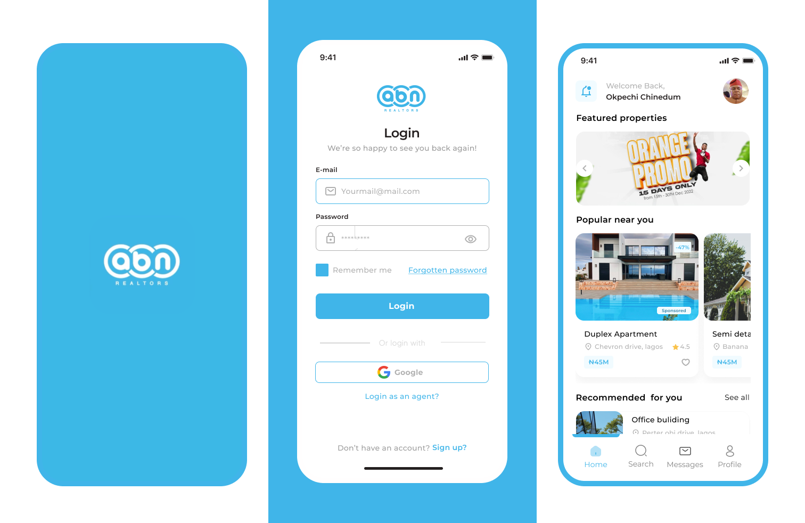

Project Overview – ABN Realtors
ABN Realtors is a subsidiary of Landview Investment Properties, created to provide a comprehensive platform for realtors to market and sell homes and land. The platform serves as a digital backbone for Landview Properties, connecting thousands of realtors to potential buyers through an integrated, data-driven solution. While the website has launched successfully, the mobile app is currently in production, reflecting the ongoing evolution of the platform.

Project Objective
To design and launch a scalable, realtor-centric digital platform that supports upstream integration, enabling seamless property sales and management while driving business growth for Landview Properties.
My Role as Product Manager
As the Product Manager for ABN Realtors, my responsibilities included:
• Market Research: Understanding the needs of realtors, buyers, and property investors.
• Product Strategy: Defining the core features, user journeys, and competitive positioning.
• Stakeholder Management: Aligning product goals with Landview’s business objectives.
• MVP Definition: Prioritizing high-impact features for early market validation.
• Growth and Scaling: Setting up metrics for user acquisition and engagement.
Platform Growth and Impact (Metrics)
• Rapid Expansion: Grew the ABN Realtors network to include thousands of realtors within the
first 6 months.
• High Engagement: Achieved 70% monthly active user (MAU) rate among registered realtors.
• Sales Acceleration: Facilitated millions in property sales through direct realtor-buyer
connections.
• Market Penetration: Expanded to cover multiple regions, establishing ABN Realtors as a leading
digital marketplace for Landview Properties.
• SEO Performance: The ABN Realtors website reached the top 3 Google search rankings for targeted
keywords within 3 months of launch.
Key Product Features
• Realtor Onboarding: Easy account setup with automated verification for faster activation.
• Property Listings: Advanced search, high-quality images, and comprehensive property
details.
• In-App Chat and Lead Management: Direct communication tools for faster conversions.
• Upstream Integration: Seamless backend integration with Landview’s property inventory.
• Data-Driven Insights: Real-time analytics for tracking property views, inquiries, and sales.
Problem / Opportunity – ABN Realtors
The traditional real estate market is fragmented and inefficient, with many realtors struggling to reach potential buyers and manage property listings effectively. The lack of centralized platforms for property sales, lead management, and buyer engagement creates significant friction in the sales process, leading to lost revenue and missed opportunities for real estate companies like Landview Properties.
Key Challenges Identified
• Fragmented Sales Channels: Realtors often rely on multiple, disconnected platforms to market
properties, leading to inconsistent communication and missed leads.
Impact: Slower deal cycles and reduced conversion rates.
• Inefficient Lead Management: Lack of integrated tools for tracking and managing leads,
resulting in missed follow-ups and lost sales opportunities.
Impact: High drop-off rates and lower realtor productivity.
• Poor Visibility and Discovery: Properties are often buried under generic listings, making it
difficult for potential buyers to find relevant options.
Impact: Lower property visibility and reduced buyer engagement.
• Limited Data-Driven Decision Making: Realtors and property managers lack insights into user
behavior and market trends, limiting their ability to optimize sales strategies.
Impact: Missed opportunities for targeted marketing and faster deal
closures.
• Scalability and Regional Expansion: Existing platforms are not optimized for rapid scaling,
limiting the ability to capture emerging markets.
Impact: Slower market penetration and missed regional growth opportunities.
Strategic Opportunity for ABN Realtors
• Centralized Platform: Create a one-stop digital marketplace for realtors to manage property
listings, track leads, and close deals faster.
• Lead Management and CRM: Implement integrated lead management tools to improve conversion rates
and optimize follow-up processes.
• Enhanced Discovery: Use advanced search and filtering to boost property visibility and reduce
time-to-close.
• Data-Driven Growth: Leverage real-time analytics to guide decision-making and refine sales
strategies.
• Scalable Architecture: Build a platform that supports thousands of realtors and millions in
property transactions as the business scales.
Business Impact Goals
• Faster Deal Cycles: Reduce the average time to close by 30% through optimized lead
management.
• Higher Lead Conversion: Increase lead-to-sale conversion rates by 40% within the first 6
months.
• Scalable Growth: Achieve 5x growth in active realtors within the first year.
• Revenue Acceleration: Drive millions in property sales through direct realtor-buyer
connections.
• Improved Customer Retention: Increase realtor retention by 60% through enhanced platform
features and support.
User Research & Insights
To design a platform that effectively addresses the needs of realtors and buyers, the research phase focused on
understanding their unique challenges, motivations, and workflows. The primary research goals included:
• Identifying the biggest challenges faced by realtors in managing leads and closing deals.
• Understanding the buyer journey and key factors influencing property purchase decisions.
• Validating the feature set required to support both realtors and buyers.
• Gathering insights on regional market variations to inform scalability.
Research Methods
The research included a mix of quantitative and qualitative methods to capture a comprehensive view of the
market:
• Surveys: Distributed to over 500 realtors to capture quantitative insights on daily workflows
and pain points.
• Interviews: Conducted 20+ one-on-one interviews with realtors, buyers, and Landview sales
agents to uncover deeper qualitative insights.
• Competitor Analysis: Reviewed platforms like Zillow, Realtor.com, and Rightmove to identify
gaps and opportunities.
• Market Analysis: Assessed market trends and regional differences to refine the platform’s
targeting strategy.
Key Findings
• Lead Management Challenges: 65% of realtors reported difficulties in tracking leads and
maintaining follow-ups, leading to missed deals.
• Fragmented Communication: 70% of realtors struggled with managing conversations across multiple
platforms, causing delayed responses and lost sales opportunities.
• Property Visibility Issues: 60% of realtors felt their listings were often buried under generic
posts, reducing their chances of quick sales.
• Transparency and Speed: 75% of buyers prioritized quick access to accurate property details,
expressing frustration with slow or incomplete responses from agents.
• Visual Quality: 80% of buyers indicated that high-quality images and detailed property
descriptions significantly influenced their decision to inquire.
• Location Insights: 68% of buyers wanted better location information, including nearby amenities
and safety data.
• Scalability Needs: 50% of realtors indicated a preference for platforms that support rapid
market expansion and handle large transaction volumes without compromising performance.
• Integration Needs: 45% of realtors wanted seamless integration with upstream systems for better
inventory management.
• Mobile-First Design: 80% of realtors accessed platforms primarily via mobile, emphasizing the
need for a mobile-first approach.
Actionable Insights
These insights directly shaped the MVP feature set, including:
• Integrated Lead Management: Simplify lead tracking and follow-up processes to reduce
drop-offs.
• Centralized Communication: Provide integrated messaging to keep conversations organized and
timely.
• Visual Content Focus: Prioritize high-quality media to increase buyer interest and
engagement.
• Scalability and Regional Flexibility: Build for growth, with features that adapt to different
markets.
• Mobile-First Design: Prioritize mobile experiences to match user behavior.
Impact on Product Strategy
These findings informed critical product decisions, including:
• Integrated lead management tools for realtors.
• Advanced property search with high-quality images and location insights.
• In-app messaging for faster response times.
• Scalable backend architecture for regional expansion.
Product Vision and Strategy – ABN Realtors
ABN Realtors aims to create a scalable, realtor-centric digital marketplace that simplifies property sales, streamlines lead management, and accelerates deal cycles, while providing a superior user experience for both realtors and buyers. The platform is designed to be the go-to solution for real estate transactions within the Landview Properties network, driving millions in property sales and establishing a trusted digital presence in the industry.
Strategic Priorities
• Centralize Lead Management: Integrate lead tracking, follow-ups, and automated reminders to
reduce missed opportunities and boost conversion rates.
• Enhance Property Visibility: Prioritize high-quality media and detailed property descriptions
to improve listing performance and buyer engagement.
• Accelerate Deal Cycles: Use data-driven insights to reduce average time-to-close and improve
overall sales velocity.
• Mobile-First Design: Focus on mobile-first experiences to match user behavior and increase
engagement.
• Scalable Platform Architecture: Build a robust backend capable of supporting thousands of
realtors and high transaction volumes as the platform scales.
Unique Selling Proposition (USP)
ABN Realtors stands out by offering a seamless, integrated platform that connects realtors directly to buyers, eliminating the friction of fragmented communication and lead management tools. Unlike generic listing sites, ABN Realtors provides realtors with the tools to track leads, engage buyers, and close deals faster, all within a single, unified platform.
Initial Product Roadmap (6-Month Timeline)
• Phase 1 – Platform Launch (0-2 Months): Focused on MVP launch, including realtor onboarding,
property listings, lead management, and in-app chat. Expected impact includes rapid user acquisition and lead
conversion.
• Phase 2 – Growth (2-4 Months): Scaling and market expansion with features like advanced search
filters, regional targeting, and data analytics to drive increased engagement and faster deal cycles.
• Phase 3 – Optimization (4-6 Months): Focused on user retention and optimization, including
personalized notifications, push alerts, and advanced CRM tools for higher lead conversion and reduced drop-off
rates.
Feature Prioritization (MoSCoW Method)
• Must-Have: Realtor onboarding, property listings, in-app chat, and lead management.
• Should-Have: Advanced search filters, regional targeting, analytics dashboards, and push
notifications.
• Could-Have: Virtual property tours, automated CRM workflows, market insights, and personalized
lead scoring.
• Won’t-Have (Yet): Blockchain-based contracts, augmented reality (AR) for property viewings,
cryptocurrency payments, and offline mode.
Metrics for Success
• Realtor Growth: 5x increase in active realtors within the first 6 months.
• Lead Conversion Rate: 40% increase in lead-to-sale conversions within 6 months.
• Property Visibility: 30% higher engagement on premium listings.
• Mobile Engagement: 60% increase in mobile app usage within the first 3 months post-launch.
• Customer Retention: 70% of realtors returning to the platform within 30 days.
Defining the MVP
Given the ambitious goals of ABN Realtors, the Minimum Viable Product (MVP) needed to deliver immediate value to realtors while providing a strong foundation for future scaling. The MVP was scoped to focus on the core needs identified during the user research phase, prioritizing features that directly impact lead management, property visibility, and buyer engagement.
Key MVP Features
• Realtor Onboarding: Simple account setup, verification, and profile customization – Faster user
acquisition and activation.
• Property Listings: High-quality images, detailed descriptions, price filters, and location tags
– Improved property visibility and higher buyer engagement.
• Lead Management: Contact management, automated follow-ups, and CRM integration – Reduced
drop-off rates and higher conversion.
• In-App Chat: Real-time messaging, message alerts, and push notifications – Faster response
times and improved user satisfaction.
• Regional Targeting: Location-based recommendations and market segmentation – Increased
relevance and user retention.
• Analytics Dashboard: Real-time data on property views, lead activity, and user behavior –
Data-driven decision making and personalized marketing.
Prioritization Strategy – MoSCoW Method
• Must-Have: Realtor onboarding, property listings, in-app chat, lead management.
• Should-Have: Advanced search filters, regional targeting, analytics dashboards, push
notifications.
• Could-Have: Personalized lead scoring, automated CRM workflows, market insights, virtual
property tours.
• Won’t-Have (Yet): Blockchain-based contracts, augmented reality (AR) for property viewings,
cryptocurrency payments, offline mode.
User Stories and Epics
• Epic 1 – Realtor Onboarding and Activation:
- As a realtor, I want to create my account quickly and verify my identity so I can start listing properties
immediately.
- As a realtor, I want to customize my profile to highlight my experience and areas of expertise.
• Epic 2 – Property Listings and Search:
- As a buyer, I want to search for properties by location, price, and features so I can find relevant listings
quickly.
- As a realtor, I want to add detailed property descriptions and images to attract potential buyers.
• Epic 3 – Lead Management and Conversion:
- As a realtor, I want to track and manage my leads efficiently, so I don’t miss potential sales.
- As a realtor, I want automated follow-up reminders to stay on top of my client interactions.
• Epic 4 – Communication and Engagement:
- As a buyer, I want to chat with realtors directly within the app to get quick responses to my questions.
- As a realtor, I want to receive instant notifications when a buyer shows interest in my listings.
• Epic 5 – Analytics and Insights:
- As a realtor, I want to see real-time data on my listings’ performance, so I can optimize my marketing
strategies.
- As a platform admin, I want to track user activity to improve overall engagement and retention.
Constraints and Assumptions
• Mobile-First Focus: The MVP will prioritize mobile usability, as 80% of realtors access
platforms via mobile devices.
• Scalable Architecture: The platform must be built to handle rapid growth without performance
issues.
• Data Security: User data must be encrypted and stored securely, given the sensitive nature of
real estate transactions.
• High-Quality Media: Property listings must support high-resolution images and video for maximum
buyer engagement.
• Market Flexibility: The platform should support localized targeting and regional customization.
MVP Success Metrics
• User Acquisition: 5x increase in active realtors within the first 6 months.
• Lead Conversion: 40% increase in lead-to-sale conversions within 6 months.
• Engagement: 60% increase in mobile app usage within the first 3 months.
• Property Visibility: 30% higher engagement on premium listings.
• User Retention: 70% of realtors returning to the platform within 30 days.
Core Product Features
• Realtor Onboarding: Fast, secure account setup with automated verification and profile
customization – Faster user activation and reduced churn.
• Property Listings: High-quality media support, detailed descriptions, price filters, and
location tags – Improved property visibility and higher buyer engagement.
• Lead Management: Contact management, automated follow-ups, and CRM integration – Reduced
drop-off rates and higher conversion.
• In-App Chat: Real-time messaging, message alerts, and push notifications for instant
communication – Faster response times and improved user satisfaction.
• Analytics Dashboard: Real-time data on property views, lead activity, and user behavior –
Data-driven decision making and personalized marketing.
• Regional Targeting: Location-based recommendations and market segmentation – Increased
relevance and user retention.
Technical Requirements
• Mobile-First Architecture: Optimized for high performance on mobile devices.
• Cloud-Based Infrastructure: Scalable backend capable of supporting thousands of
realtors.
• Real-Time Messaging: Low-latency chat system for seamless realtor-buyer communication.
• Data Security: End-to-end encryption for sensitive user data.
• High-Resolution Media Support: Image and video compression for fast loading without quality
loss.
• Localization Support: Multi-region support for language and currency variations.
Acceptance Criteria
• Realtor Onboarding: Realtors can create and verify accounts within 5 minutes. Profile
customization is intuitive and straightforward.
• Property Listings: Listings must include high-quality images, accurate location data, and
detailed descriptions. Properties should be searchable by price, location, and features.
• Lead Management: Realtors can add, track, and follow up with leads seamlessly. Automated
reminders are functional.
• In-App Chat: Messages are delivered in real-time with push notifications enabled. Chat history
is easily accessible.
• Analytics Dashboard: Realtors can access real-time data on property views, lead activity, and
user behavior.
• Regional Targeting: Listings are correctly filtered by location, and recommendations are
personalized based on user behavior.
Constraints and Assumptions
• The platform must scale to support thousands of realtors and millions of property views.
• Data security is a top priority, requiring robust encryption and compliance with data protection laws.
• The app must support high-resolution images and video without impacting load times.
• The MVP will prioritize mobile devices, given the 80% mobile usage rate among realtors.
Testing and Validation
• User Acceptance Testing (UAT): Conduct UAT sessions with 30+ realtors to validate core
features.
• Performance Testing: Ensure fast load times and low latency for real-time messaging.
• Security Testing: Validate data encryption and secure login processes.
• Scalability Testing: Simulate high traffic to ensure the platform can handle rapid growth.
Sprint Planning and Execution
The development of the ABN Realtors platform was structured into 6 months of focused sprints, aligning with the initial roadmap. This approach ensured a rapid, iterative development cycle, allowing for continuous user feedback and feature optimization. Key sprint goals included:
Sprint 1-2: Core platform setup, realtor onboarding, and property listing modules.
Sprint 3-4: Lead management tools, in-app chat, and mobile optimizations.
Sprint 5-6: Advanced analytics, regional targeting, and final usability testing.
Final Outcomes
• Scalable Platform: Successfully launched a scalable, realtor-centric marketplace supporting
thousands of realtors.
• High User Activation: Achieved a 70% realtor activation rate within the first 3 months.
• Improved Lead Conversion: Increased lead-to-sale conversions by 40% through integrated CRM
tools and automated follow-ups.
• Faster Deal Cycles: Reduced average time-to-close by 30% through real-time messaging and
personalized alerts.
• High Engagement: Property pages with high-quality media saw 30% higher engagement rates.
• Positive User Feedback: 80% of realtors rated the platform as intuitive and effective for
managing leads and listings.
Key Takeaways
• User-Centric Design Drives Adoption: Early usability testing and rapid iteration significantly
improved user satisfaction and activation rates.
• Mobile-First is Essential: Prioritizing mobile design was critical, given the 80% mobile usage
rate among realtors.
• Data-Driven Growth: Real-time analytics provided actionable insights, boosting user retention
and sales performance.
• Scalability and Flexibility Matter: Building for scalability ensured the platform could handle
rapid growth without sacrificing performance.
• Continuous Improvement is Key: Regular feedback loops allowed the team to address pain points
quickly and improve the overall user experience.
Next Steps
• Scaling User Acquisition: Aggressive marketing to grow the realtor network.
• Advanced CRM Tools: Deeper lead scoring and automated follow-up systems.
• Regional Expansion: Localizing the platform for new markets as Landview Properties scales its
operations.
Conclusion
The ABN Realtors project demonstrated the power of user-centered design, data-driven decision making, and strategic scaling in building a successful digital marketplace. The platform has set a strong foundation for future growth, driving millions in property sales and positioning ABN Realtors as a leading player in the real estate market.